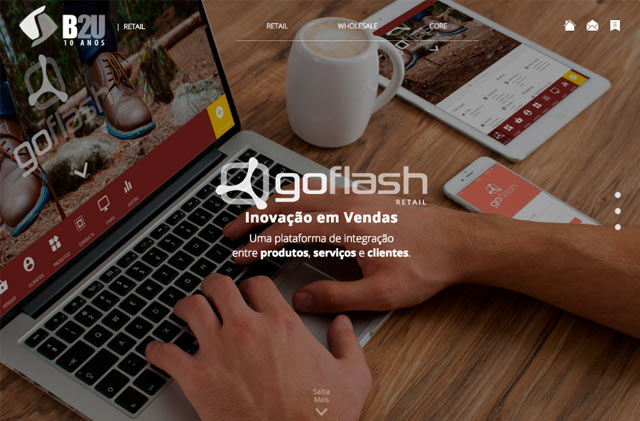

Pessoal
Designer por Profissão. Front-End Entusiasta. Ciclista Amador.
Fotógrafo de celular. Blogueiro quando entediado. Foodie. Internacionalista.
Carioca na Diáspora. Em São Paulo Há 8 Anos.
Todo mundo precisa de um objetivo na vida, então o meu, por enquanto,
é consolidar uma carreira como Webdesigner e Desenvolvedor Front-End.
Profissional Um Pouco Rodado Por Ai. Mas Quem Não É?
-
Front-End Dev @ B2U Sistemas Ltda.
Responsável pelo Design e Front-End de diversos aplicativos da empresa - ATUAL
Casa Verde, São Paulo
-
Webdesigner Pl @ ContactoNET Ltda.
Atuando na elaboração do layout e desenvolvimento do front-end de todos os clientes da empresa - 2013/2014
Vila Mariana, São Paulo
-
Webdesigner Pl @ MidiasPrint Ltda.
Responsável pela criação e manutenção do site institucional e reelaboração do código de seus sites de e-comm - 2009/2013
Lapa, São Paulo
-
Designer @ Terra Networks
Contrato temporário na equipe de manutenção da nova identidade visual do Terra e tratamento de telas - 2009
Brooklin, São Paulo
-
Webdesigner Pl @ Interface-TI Ltda.
Responsável pela criação e manutenção do site institucional e reelaboração do código de seus sites de e-comm - 2005/2009
Flamengo/Gávea, Rio de Janeiro
-
Webdesigner Jr. @ Meu Provedor Ltda.
Responsável pela reformulação do portal da empresa, entre outros clientes - 2003
Centro, Rio de Janeiro
- html
- css
- js
- ux | ui
- ps
- php
- html
- css
- js
- ux | ui
- ps
- php
-
Cursos e Especializações
Formação Front-End @ Caelum - Desenvolvimento Web com HTML, CSS e JavaScript
- Programação front-end com JavaScript e jQueryWebDeveloper @ People Computers - HTML, XHTML, JavaScript
- ASP, VBScript, PHP / MySQLGraduação em WebDesign @ UNESA - Incompleto - 2001
-
Outras Habilidades
Conhecimento em Outras Ferramentas - Sublime Text e Dreamweaver
- Photoshop e Fireworks
- Flash e CorelDRAW
- SASS, Bootstrap e Grunt
Idiomas - Inglês (Avançado/Fluente)
- Alemão (Básico/Iniciante)
Portifólio Vamos Ao Que Interessa, Não é Mesmo?
PARA QUEM: B2U Sistemas
SOBRE O QUE: Software House
O QUE EU FIZ: Layout + Front-End
EU USEI: HTML + CSS3 + JQuery
Website: b2usistemas.com.br
Renovação do site institucional, utilizando conceitos mais modernos de HTML5 e CSS e retirando do WordPress.

PARA QUEM: Marina Di Vietri
SOBRE O QUE: Restaurante Italiano
O QUE EU FIZ: Layout + Front-End
EU USEI: HTML + CSS3 + JQuery
Website: marinadivietri.com.br
O cliente possuía um site em Flash cujos originais já havia perdido. Precisava, então, de uma numa roupagem que pudesse ser também vista em em dispositivos móveis.

PARA QUEM: ContactoNET
SOBRE O QUE: Agência Web
O QUE EU FIZ: Layout + Front-End
EU USEI: HTML + CSS3 + JQuery
Website: contactonet.com.br
Reformulação do site atual, valorizando mais o portifólio e os cases da empresa, além de implantção de visual diferenciado do tradicional aplicado. No momento aplicando responsividade para que fique coerente com o tipo de excelência no atendimento prestado.

PARA QUEM: Potential Ltda.
SOBRE O QUE: Consultoria e Coaching
O QUE EU FIZ: Layout + Front-End
EU USEI: HTML + CSS3 + JQuery + Schema
Website: potential.com.br
Como o cliente era muito antigo a empresa ofereceu como brinde a redesign completo, incluindo novas telas de sistema internio, retirando as animações em Flash e deixando apenas web standards. Foi aplicado, também, microdatas na área de livros.

PARA QUEM: Célia Brandão
SOBRE O QUE: Psicologia
O QUE EU FIZ: Layout + Front-End
EU USEI: HTML + CSS3 + JQuery
Website: celiabrandao.com
Site pessoal da Psicóloga Célia Brandão em substituição ao seu velho modelo do Blogspot. Sua instalação foi feita em Wordpress para maior flexibilidade da cliente.
PARA QUEM: Motel Cachoeiras
SOBRE O QUE: Rede de Motéis
O QUE EU FIZ: Atendimento + Layout + Front-End
EU USEI: HTML + CSS3 + JQuery
Website: motelcachoeiras.com.br
O cliente pediu total reformulação do site e a eliminação das partes em Flash. Como bônus, estruturei responsividade tornando o site adaptável a tablets e outros dispositivos móveis.
PARA QUEM: Globatech Services
SOBRE O QUE: Empresa de Engenharia
O QUE EU FIZ: Atendimento + Design + Front-End.
EU USEI: HTML + CSS3 + JQuery + SASS
Website: globatechservices.com
O cliente, de naturalidade alemã, precisava de um site para seu novo empreendimento no Brasil em três línguas. Com a versão em inglês e em alemão prontas o site já foi ao ar. Versão em Português em construção.
PARA QUEM: Sara Biava
SOBRE O QUE: Consultoria e Gestão
O QUE EU FIZ: Atendimento + Design
EU USEI: Fireworks
Website: biava.com.br
A cliente precisava de um site simples e limpo para captar clientes em setores coligados a instituições religiosas. Foi oferecido, como cortesia, versões para dispositivos móveis. Posteriormente, outros websites como o mesmo padrão foram construídos.
PARA QUEM: RELP Consultoria
SOBRE O QUE: Empresa de Consultoria
O QUE EU FIZ: Atendimento + Design + Front-End
EU USEI: HTML + CSS3 + JQuery
Website: relpconsultoria.com.br
Assumi a parte de design e, logo após, a de desenvolvimento. As ilustrações foram feitas à parte e a pedido do cliente foram inseridas em diversas partes do texto. A primeira versão foi construída utilizando SASS porém refiz sem utilizar a ferramenta.

PARA QUEM: STH Plast
SOBRE O QUE: Comércio de Imóveis
O QUE EU FIZ: Atendimento + Layout + Front-End
EU USEI: HTML + CSS3 + JQuery + Mobile
Website: sthplast.com.br
Reformulação do site, com foco em imagens. A cliente também quis versões para tablets e smartphones.
PARA QUEM: Recanto das Perdizes
SOBRE O QUE: Hotel
O QUE EU FIZ: Atendimento + Layout + Front-End
EU USEI: HTML + CSS3 + JQuery + Mobile
Website: recantodasperdizes.com.br
Construção de novo site. Foram criadas também versões para dispositvos móveis.
PARA QUEM: Panelli
SOBRE O QUE: Comércio de Metalurgia
O QUE EU FIZ: Atendimento + Layout + Front-End
EU USEI: HTML + CSS3 + JQuery + Mobile
Website: panelli.com.br
Construção de site para WordPress. Foram criadas também versões para dispositvos móveis.

PARA QUEM: Balanças Apollo
SOBRE O QUE: Balanças Industriais
O QUE EU FIZ: Design
EU USEI: Fireworks
Website: balancasapollo.com.br
Aqui o cliente possuia um site deveras antigo que foi modernizado e implantado no WordPress pela equipe de desenvolvimento. Site sem responsividade.

PARA QUEM: Ortopedia Pedro de Toledo
SOBRE O QUE: Clínica Ortopédica
O QUE EU FIZ: Design + Front-End
EU USEI: HTML + CSS + jQuery
Website: ortopediapedrodetoledo.com.br
Meu primeiro site na fronteira que cruzei do WebDesign para as técnicas atuais de Desenvolvimento. Ponto seminal onde abandonei de vez o Dreamweaver (usando somente Sublime ou Brackets agora) e início do meu interesse em jQuery.
PARA QUEM: Janahina Morena
SOBRE O QUE: Loja de Calçados
O QUE EU FIZ: Layout + Front-End
EU USEI: HTML + CSS + Plugins jQuery
Website: janahinamorena.com.br
Minha participação no projeto foi redesign da home, tratamento e alocação das imagens necessárias. Coleção muda frequentemente.

PARA QUEM: Travel Ace
SOBRE O QUE: Empresa do Ramo de Turismo
O QUE EU FIZ: Design da Engine
Jogo da Memória utilizado em Eventos , que pode ser individual ou em modo de competição cujo código básico está pronto. A fácil personalização torna a migração para quase todas as necessidades dos clientes.

PARA QUEM: São Judas
SOBRE O QUE: Universidade
O QUE EU FIZ: Design da Engine
Quiz utilizado em Eventos, que pode ser individual ou em modo de competição cujo código básico está pronto. A fácil personalização torna a migração para quase todas as necessidades dos clientes.
PARA QUEM: Zenvia
SOBRE O QUE: Serviços Móveis
O QUE EU FIZ: Design + Refinamento da Engine
EU USEI: Adobe Flash CS4
Jogo de Roleta utilizado em Eventos rodando em Flash cujos ajustes em ActionScript não representam grandes desafios. Entretanto, a personalização é capciosa.
-

B2U Sistemas
link -

Marina DiVietri
link -

ContactoNET
link -
Potential
link -

Célia Brandão
link -

Motel Cachoeiras
link -

Globatech
link -

Sara Biava
link -

Relp Consultoria
link -

STH Plast
link -
Recanto das Perdizes
link -

Samsung | Fortraining
link -

Balanças Apollo
link -

Ortopedia Pedro de Toledo
link -
JANAHINA MORENA
link -

Artemobília
link -
Travel Ace
link -
São Judas
link -

Zenvia
link
Contato
Bate Um Fio. Manda Um WhatsApp. Talvez Eu Possa Ajudar. +55 (11) 9 7972-7575mbsantiagojr@outlook.com